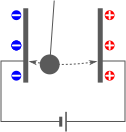
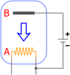
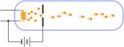

電流は電荷の流れである
前章で見たように、電流は磁場を作り、逆に磁場は電流にアンペール力を与える。電流は、導線の中を「何か」が流れることによって生じていると考えられる。ということは、磁場を発生させたり、アンペール力を受けているのは実際にはその「何か」ということになる。
この章では、3.1節で、その「何か」の正体が電荷に他ならないことについて述べ、電荷が磁場から受ける力（＝ローレンツ力）について述べる。その後、3.2節で、導線の中を流れている電荷は、電子と呼ばれる粒子のようなものであることを見る。
3.1ローレンツ力
この節では、電流の正体が電荷の流れであること、および、磁場中を動く電荷にはローレンツ力と呼ばれる力(
3.1.1シャトルボール実験：電流は電荷の流れ

導線を切断すると電流は止まる。従って、導線の中を「何か」が流れていると考えるのは自然である。その「何か」は電荷を帯びていることが、右図のようなシャトルボール実験（Shuttling ball experiment）を行うと分かる（シャトルとは往復を繰り返すものという意味である）。これは、金属などの帯電しやすいボールを吊り下げて、一方の電極につけた後、手を離すとボールが減衰することなく勝手に往復運動を繰り返すというものである。ボールの運動を詳しく見ると次のようになる。まず、正極はプラスに帯電し、負極はマイナスに帯電しているため、接触したボールが電極と同じ符号に帯電する。すると、反発力を受けることになるので、反対側に移動する。その後反対側の電極に接触すると、今度は逆符号の電荷をもつようになり、逆方向の反発力を受け元の電極のほうに戻ってくる。これにより、往復運動を繰り返すことになる。
重要なのは、この実験では、電流が発生するということである（ただし非常に小さい）。よって、電流は電荷の移動を伴うことになる。ボールの電荷を測れば、どれだけの電荷が運ばれているかが分かる。実際に測定を行うと、単位時間あたりに運ばれる電荷の量と、電流の値は比例関係にあり、比例係数は、電流が
そこで、電流が、電荷の流れと等価であることを認めることにしよう。
3.1.2ローレンツ力(2
第2章で見たように、磁場中におかれた電流にはアンペール力が働く。そして、電流は電荷の流れを伴う。ということは、磁場中を動く荷電粒子（＝電荷を持った粒子）は、アンペール力に対応するような力を受けると考えられる。この力をローレンツ力という。アンペール力は、電流内を運動する電荷が受けるローレンツ力により説明できるはずである。
まず、電荷
1つの荷電粒子に働くローレンツ力を
一様磁場の場合に数値計算を行うと、右図のように磁場の方向に沿ったらせん運動をする。
3.1.3電磁気力を受ける荷電粒子の運動方程式：式(3
以上により、磁場中を運動する電荷には、ローレンツ力(
以上により、電磁場中での荷電粒子の運動
3.2電流は、電子の流れ
前節では思考実験的にローレンツ力を考えたが、ローレンツ力は非常に小さいので、実際に帯電した物体を動かして直接測定するのは難しい。この節では、導線を流れる電流が、電子と呼ばれる荷電粒子の流れであり、それを用いれば、ローレンツ力を直接確認できることを見る。
3.2.1エジソン効果：加熱した導線は電子を放出する
電流が流れている導線の中には、電荷が流れているわけだが、その電荷を持っているものを導線から取り出すことはできないだろうか。

そのためには、導線を加熱すればよいことが知られている。例えば、白熱電球のタングステンフィラメントは2000℃程度になるが、この時右図のように、負極側のフィラメントAと、電球内に挿入した正極Bの間に電流が流れることが知られている。これをエジソン効果という。本来であれば、この回路は閉じていないため電流が流れないはずである。従って、何かが空中を伝っているのだと考えられる。その何かのことを電子と呼ぶ。ただし、図中の電源を逆向きにすると電流は流れなくなる。同図のように、電流はB→Aに向かって流れる（＋から－）。しかし電子は、加熱したAから飛び出すはずなので、電流の向きとは逆のA→Bに向かって流れていくはずである（－から＋）。即ち、電子の流れは、電流の向きとは逆向きになる。これは、電子は負の電荷を持つことを意味する。本来であれば、電子の電荷を正として、電流の向きも電子の流れる方向にとるほうが自然だが、そうなっていないのは1.1節で述べた様な歴史的な事情である。要は、電子が発見され前に決められたものが、そのままになっているわけである。
3.2.2電子銃による電子ビームの可視化

右図で模式的に示したように、エジソン効果によって放出された電子に高い電圧をかけて加速させて電子ビームを発生させる装置を、電子銃という。電子銃の内部はほぼ真空であるが、わずかにヘリウムガスなどを入れておくと、電子ビームに沿って発光する。これにより、電子ビームに外部から電場や磁場をかけたときに、電子ビームがどのような影響を受けるかを可視化することができる。
電子は負の電荷を持つと述べた。従って、電子ビームに電場をかけると、電場と逆方向に曲がる。また、磁場
3.2.3電子は粒子的な性質を持つ
もし、電子が粒子であれば、運動方程式(
というわけでまず、
よって残るは、電子の電荷
電子が粒子であるならば、その大きさはどうなのだろうか。また、導線の中をどのように流れているのだろうか。この話題は非常に興味深いが、現状では深入りせずに、通常のマクロな物体の運動に引き続き着目する。電子のようなミクロな世界の性質は量子力学の主題である。
【3.2-注1】素電荷を求める：ミリカンの油滴実験
電磁気力だけでは比電荷しかわからないので、重力とのバランスを考える。まず、霧吹きで油を撒く。すると、霧を構成する小さな油滴は、重力
このような実験を様々な油滴に対して行うと、